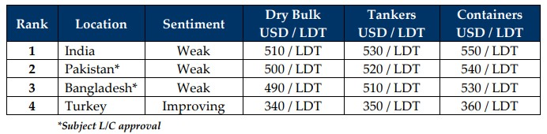

inWeekly Demolition Reports02/01/2024

The last week of the year delivered unto the international ship recycling community& industry overall, a ship load of mixed feelings.
On the one hand, we have seen comparatively more deals concluded in 2023 than we did in 2022, with 2022 being the weakest of years over the last decade (in terms of the volume of vessels recycled in a single year). On the other hand, despite the industry witnessing a far firmer volume of vessels recycled this year, when compared to a bloated global NB orderbook (particularly in the container sector), the recycling industry still fell short of the number of permanent exits needed in order to balance out global fleets.
Prices too have endured a rocky ride through much of 2023, with peaks well above and into USD 600/LDT being surpassed in the first half of the year, followed by the traditional summer / monsoon collapse that saw about USD 150/LDT wiped off in a few short months during the rains and even after. Accordingly, losses sustained by most Ship Owners, Cash Buyers, & Vessel Recyclers have been particularly punishing for yet another year, as all continue to hope for brighter days for this sector and we forever bid 2023 goodbye.
As a cheat sheet on the eve of the New Year, we would like to remind our readers that financing issues continue to persist in both Pakistan & Bangladesh – with a majority of their domestic banks still unwilling to sanction fresh financing / L/Cs on new vessel purchases, even though demand has been firming and domestic yards are starting to gradually empty out.
Moreover, there also remains cause for cautious optimism amidst international steel and commodity prices that remain firm, as many believe vessel prices to have bottomed out across the sub-continent markets. Currencies appear to have been fluctuating within an acceptable-to-positive range over recent weeks as well, all while incoming IMF loans stand to potentially alleviate a lot of the funding hurdles that are currently besetting Bangladeshi & Pakistani banks.
For week 52 of 2023, GMS demo rankings / pricing for the week are as below.
All at GMS would like to wish readers a Happy New Year and all the best for 2024!

📄 Download PDF: Ship-recycling-market-insight-week-52-2023-With-Mixed-Feelings-Adieu-2023.pdf
Source: GMS,Inc. ,https://www.gmsinc.net/gms_new/index.php/web